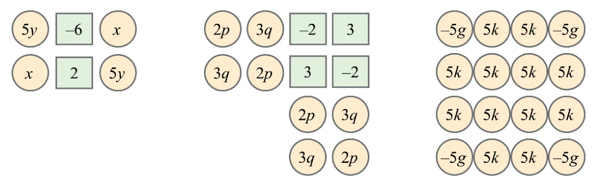

Page No. 93-94 — Figure it Out
- Add the numbers in each picture below. Write their corresponding expressions and simplify them. Try adding the numbers in each picture in a couple different ways and see that you get the same thing.

Ans: Some of the ways are
(i) Method 1: Group by Like Terms
\(5y + x + x + 5y + (-6) + 2\)
\(= (5y + 5y) + (x + x) + (-6 + 2)\)
\(= 10y + 2x - 4\)
Method 2: Group by Rows
Top row: \(5y + (-6) + x\)
Bottom row: \(x + 2 + 5y\)
Combine: \((5y + 5y) + (x + x) + (-6 + 2)\)
\(= 10y + 2x - 4\)
Final Number: \(10y + 2x - 4\)
Try some other ways!
(ii) Method 1: Group by Term Type
\(2p\) appears 4 times: \(8p\)
\(3q\) appears 4 times: \(12q\)
Final number: \(3 + (-2) + (-2) + 3 = 2\)
Total: \(8p + 12q + 2\)
Method 2: Group by Columns
Column 1: \(2p + 3q\)
Column 2: \(3q + 2p\)
Column 3: \((-2) + 3 + 2p + 3q = 1 + 2p + 3q\)
Column 4: \(3 + (-2) + 3q + 2p = 1 + 3q + 2p\)
Final Number: \(8p + 12q + 2\)
Try some other ways!
(iii) Method 1: Group by Term Type
\(-5g\) appears 4 times: \(-20g\)
\(5k\) appears 12 times: \(60k\)
Total: \(-20g + 60k\)
Method 2: Group by Columns
First column: \(-5g + 5k + 5k + (-5g) = -10g + 10k\)
Middle columns 2 and 3 all \(5k = 8 \times 5k = 40k\)
Last column: \(-5g + 5k + 5k + (-5g) = -10g + 10k\)
Total of all: \(= -10g + 10k + 40k - 10g + 10k\)
\(= -20g + 60k\)
Try some other ways!
- Simplify each of the following expressions:
- \(p + p + p + p\), \(p + p + p + q\), \(p + q + p - q\)
- \(p - q + p - q\), \(p + q - p + q\)
- \(p + q - (p + q)\), \(p - q - p - q\)
- \(2d - d - d - d\), \(2d - d - d - c\)
- \(2d - d - (d - c)\), \(2d - (d - d) - c\)
- \(2d - d - c - c\)
Ans:
(a) \(4p\), \(3p + q\), \(2p\)
(b) \(2p - 2q\), \(2q\)
(c) \(0\), \(-2q\)
(d) \(-d\), \(-c\)
(e) \(c\), \(2d - c\)
(f) \(d - 2c\)